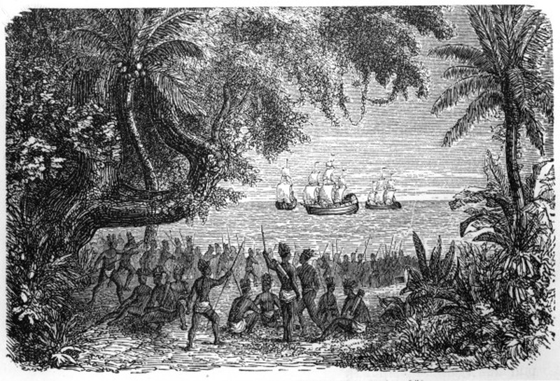
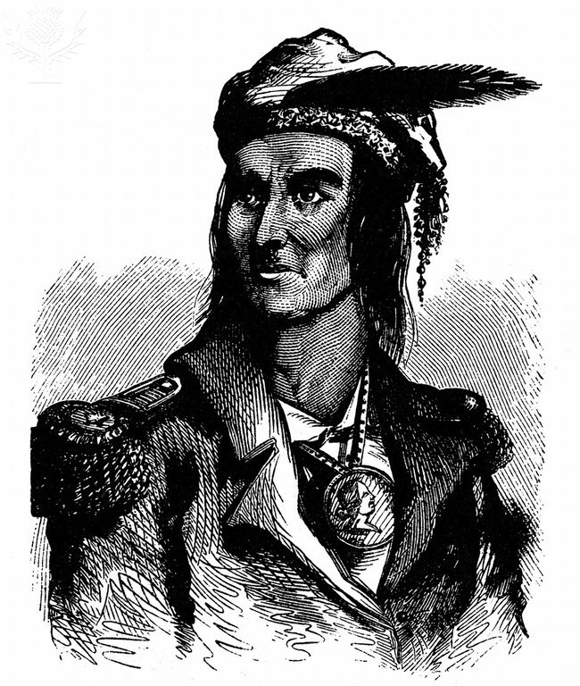

What were the purposes for giving Native Americans alternative names,
and how did the name changes affect them?
"Indians" used to refer to Native Americans has a long history.
The word is "generally attributed to Christopher Columbus, who,
mistakenly believing he had reached the Indies, named the indigenous
peoples he encountered Indios" (ABC-CLIO). I believe that the trait
of giving foreigners a unique name for you and your people runs
through Europe, and that the English gave the tribes easier names
because that is what everyone else did. They might've thought it
was a normal thing to do and they never bothered to even inquire
the natives of what their actual names were.

?
Columbus sets foot on the
American continent on 12 October 1492 at the Bahama island of Guanahani.
Most Native American tribes were completely complicit with the
alternate names that the English gave them. However, some name
changes can be "undesirable or difficult to [have] effect...[m]any members
of these tribes and bands prefer the ethnonyms Lakota, Dakota, and
Nakota (for the three dialects of their language), because Sioux is
a derivation of Nadouessioux—meaning "Adder" or "Snake"; another name
bestowed courtesy of traditional rivals" (Britannica School). Name
changes by the settlers can sometimes be ignorant and cause easily
avoidable disturbances. Blatantly assuming that a group will be fine
with a name can cause serious issues, like what happened with the Sioux
tribes. Despite that, early American settlers did not take this into
consideration, and ended up negatively engaging in the general activities
of the natives.
Around the time of the American Revolution, "portrayals of Native Americans
appeared as "noble savages," or "uncivilized," frequently noted by their
clothing and demeanor." It's clear to see that Native Americans have been treated
as less-than for a long time. Europeans' unwillingness to talk to people
that believe are less than them probably lead to the disrespectful and
otherwise seemingly pointless name changes they gave the natives when
they settled in America.
To the right of this text, you can see Tecumseh.
Native Americans are generally portrayed as simple, weak, and careless by the
English. However, Tecumseh was not a normal Native American according to the
person who illustrated him. He is portrayed here as a strong, tidy man who is
wearing what almost looks like a suit. The reason he was looked at in such a
positive way was because he served the English, not a Native American tribe.
Therefore, the English looked at him under a different light and illustrated him
more closely to one of their own. The English show clear bias against people who
they dislike. If you're favored by them, you are portrayed in illustrations and
documents much better than those who angered them.

?
Tecumseh (c1768-1813) American Indian chief of Shawnees.
After the rising against the white settlers was crushed in 1811, he served the English.
Commanded their Indian allies in war of 1812-1813. Died fighting in Canada.
The renaming of native tribes in America has always been a thought-provoking subject.
Some names of the tribes were even barely changed by the English, seemingly making
altercations for no apparent reason. However, after taking a look back at history and
seeing what occurred leading up to these name changes makes it very clear why it was done.
Native tribe names were changed in order to make English peoples' lives easier, and to
assert the fact that they were in control of the natives. They didn't care what the groups
thought of the name change, so they ended up causing controversy within some groups. But
it's not only the English; Naming foreign groups based on personal preference is part of
European culture, as seen with Columbus. And despite the poor treatment of the tribes as
a whole, cases like Tecumseh are provided to the general public as a common act back in
the day. It is truly the thirst for superiority in the English that makes alternate names
among the Native American tribes such a big deal, and why we still talk about it today.
Keenan, Jerry. "American Indians." American History, ABC-CLIO, 2021,
americanhistory.abc-clio.com/Search/Display/261390. Accessed 10 Sept. 2021.
"Native American." Britannica School, Encyclopædia Britannica, 25 Jun. 2020.
school.eb.com/levels/high/article/Native-American/117303. Accessed 8 Sep.
2021.
Perales, Marian. "Native American Representations." American History, ABC-CLIO,
2021, americanhistory.abc-clio.com/Search/Display/1190151. Accessed 10
Sept. 2021.
Tecumseh (c1768-1813) American Indian chief of Shawnees. After the rising
against the white settlers was crushed in 1811, he served the English.
Commanded their Indian allies in war of 1812-1813. Died fighting in
Canada.. Photography. Britannica ImageQuest, Encyclopædia Britannica,
25 May 2016.quest.eb.com/search/american-indian/3. Accessed 14 Sep 2021.
Columbus meets natives / Woodcut / 1880. Fine Art. Britannica ImageQuest,
Encyclopædia Britannica, 25 May 2016.quest.eb.com/search/
christopher-columbus-natives. Accessed 16 Sep 2021.
Thank you for your time!
▼